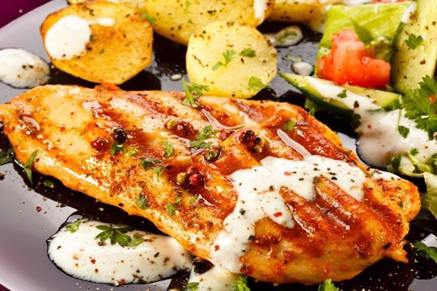
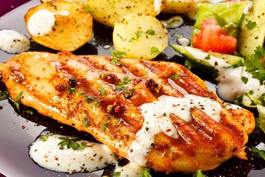
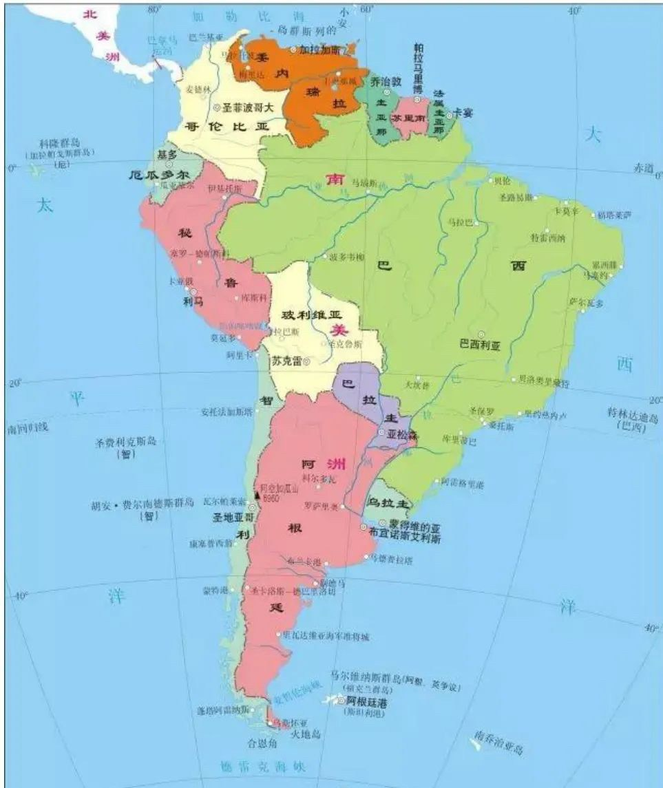

浪跡天涯 - 中南美洲
阿根廷
1980年初，我隨貿易團到阿根廷首都布宜諾斯艾利斯參展，展覽會場就在我們所住的大飯店內。展出首日來了一位中老年紳士 Hans ，西裝筆挺，動作舉止優雅，一看就知道是一個大生意人，與我相談甚歡。一般阿根廷人晚餐時間在9點之後，Hans邀請我和另外兩位團員當天晚上10點吃牛排大餐，阿根廷是畜牧大國，大塊牛排舉世聞名，我的食量只能吃1/2塊，實在暴殄天物，晚餐結束後已近凌晨一點，回飯店後再分別洽談生意，最終喬好生意天都快亮了，我獲得60萬美元大訂單，台北一位女貿易商更厲害120萬，另外一位台中五金工廠35萬，意想不到阿根廷市場這麼大，三個人雀躍不已，相約回台灣後要大肆慶祝一番。
第二天我的攤位前來了一個年輕小伙子，穿著隨便滿臉落腮鬍，還留著黑人爆炸頭，乍看之下有些恐佈，年輕人說他想從台灣進口，問我能不能賣東西給他？我心想是來亂的，隨便給了他一些產品目錄和報價單，隔天一大早年輕人竟然興沖沖地跑來找我，並且列出了一張採購清單，近10萬元美金，也算是大訂單，但我毫無喜悅之色，因為這傢伙怎麼看都不像生意人。年輕人緊接表示今天是他媽媽的生日，他想邀請我晚上去他家參加生日派對，他會開車來接我。對方的話讓我心生恐懼，中南美洲經常發生外商被綁架事件，但礙於情面，不好意思當場拒絕，我要年輕人將他家的地址和電話給我，晚上有空我會自行前往。
晚間時刻我面臨天人交戰，去與不去間難做拿捏，最後我決定單刀赴會的動機有點邪門，我喜歡跳舞，阿根廷的女孩個個宛如模特兒，身材高挑，臉蛋漂亮，千載難逢的機會，豈容錯過，於是色向膽邊生，決定不入虎穴焉得虎子。我將年輕人給的地址和電話交給飯店櫃台人員，然後塔乘飯店的計程車獨自前往，身上只帶少許金錢，給了司機一點小費，請他回報飯店我所在的位置。懷著一顆忐忑不安心，走進年輕人的家，迎面而來的是節奏輕快的拉丁音樂，震天價響，男男女女勁歌熱舞，5分鐘後我迫不及待加入戰局，心中的陰霾也一掃而空。一夜狂歡，曲終人散時已凌晨三點，來到阿根廷後我幾乎沒睡過覺，卻不覺疲累，5天後貿易團轉往智利首都聖地亞哥，想到此趟阿根廷之行大豐收，我情不自禁在登機前大喊一聲Viva Argentina ！
一個多月後我回到高雄，年輕人開的信用狀早已收到，Hans 的訂單則石沉大海毫無信息，我幾度打國際電話找Hans未果。隔年我隻身再度前往阿根廷，住同一飯店打聽Hans的消息，飯店的人告訴了我一個真相，Hans是一位德裔公務人員退休，有輕微老人失智，每當外國貿易團來訪時，他總是喜歡假扮大生意人，請人吃牛排大餐並且下大訂單，樂此不疲，飯店早不以為意。附上一張照片，人不可貌相，這位年輕人後來成了我阿根廷最大客戶。當年我向上帝借膽，單刀赴會，所幸沒有被綁架，否則又是另外一個故事。
阿根廷旅遊資訊
阿根廷簡介
阿根廷共和國（西班牙語：República Argentina，英語：the Republic of Argentina），簡稱阿根廷（Argentina），是由23個省和聯邦首都（布宜諾斯艾利斯）組成的總統制聯邦共和制國家，位於南美洲東南部，東臨大西洋，南與南極洲隔海相望，西鄰智利，北與玻利維亞、巴拉圭交界，東北與烏拉圭、巴西接壤。 截至2013年底，全國人口約為4145萬人，人口數量排在世界第31位。
阿根廷位於南美洲東南部，面積約為278萬平方公里，位居世界第8，南與南極洲隔海相望，西鄰智利，北與玻利維亞、巴拉圭相鄰，東北與烏拉圭和巴西接壤。西部是以脈綿延起伏、巍峨壯麗安第斯山為主體的山地，約佔全國面積的30%。東部和中部的潘帕斯草原是著名的農牧區。北部主要是格蘭查科平原，多沼澤、森林。南部是巴塔哥尼亞高原，主要山脈有奧霍斯·德薩拉多山、梅希卡納山，海拔6964米的南美洲萬峰之冠——阿空加瓜山。
探戈
男士頭戴黑色禮帽、身著黑色晚禮服，舞步優雅，充滿紳士風度；女士身穿豔麗的紅色晚禮裙，舞姿高貴，落落大方。在夢幻般的舞曲中傾情投入，演繹著充滿南美浪漫風情、原汁原味的探戈舞蹈。

烤肉
烤肉是阿根廷的一大特色，以牛肋骨扒最為著名，烤制方法很簡單，牛肉絕不事先醃製，烤的時候僅用一點鹽，直接炭火燒烤而成。阿根廷的牛肋骨扒有個特點，就是肉中帶筋，不能太生食用，一定要燒製成七八成熟才甘香可口雖然稱為牛肋骨扒，阿根廷一向以畜牧業為本。阿根廷的牛肉直到今天仍然傲視歐關。
 


足球
阿根廷的足球富有創造力、靈感和精湛的技術此外，阿根廷隊還以善罰點球著稱，多次在世界盃關鍵的點球大戰中獲勝，被譽為「點球大戰常勝軍」八十年代，馬拉多納獨步天下，也正是因為他，很多中國球迷認識了阿根廷足球，並愛上了阿根廷足球。他帶領阿根廷青年隊獲得1979年在日本舉行的二十歲以下世界青年錦標賽的冠軍。在1986年墨西哥世界盃賽上，他與隊友捧起了世界盃！

智利
《智利》
國內電視台曾經報導一名智利女人嫁來台灣，說得一口流利的台語，12年前丈夫驟逝，她為了拉拔兩名幼兒長大，在彰化一間廟宇當廟婆，幫人解籤詩、收驚，融入台灣底層社會，深獲鄉民歡迎。當廟婆的收入微薄，該名智利婦人嫁來台灣27年未曾回過老家，廟方和彰化鄉親合力出錢贊助旅費，才讓她有機會帶著兩個兒子回去智利省親。一個很感人的故事，智利婦人在電視上笑容滿面，侃侃而談，充分顯露出南美洲人樂天知命的個性，窮得開心！
1980年，我們貿易參訪團來到智利首都聖地牙哥，剛住進飯店，就有人打電話來找我，實在納悶不解。智利對我而言是一個陌生的市場，我在當地並無熟識的朋友，怎會有人找我？不久之後答案揭曉，原來是我的英文名字陰錯陽差的結果，對方要找的 willy wang 來自台灣沒錯，但不是我，做生意有時候真的要靠點運氣，我的第一位智利客戶就如此這般從天上掉下來的。
我們住的飯店附近街道，每當華燈初上時，總是三五成群的吉普賽女郎出沒，濃妝艷抹，雙眼深邃勾人，穿著艷麗的服飾花裙，手執一元美金紙鈔，遇見了外國觀光客即搖手吶喊：「one dollar！one dollar！」吉普賽女郎並非向觀光客乞討，而是說只要給她一塊錢美金，她就可以跟你走的意思。飯店人員再三警告我們，不要去招惹這些吉普賽女郎，他們說年初就有一位白目的日本觀光客，給了吉普賽女郎一塊錢美金，真的被帶到街尾暗處欲尋幽攬勝，最後全身財物被洗劫一空，只剩一條內褲逃回飯店，沒被綁架勒索，已屬不幸中之大幸。
吉普賽人流浪世界各地，並無國籍，飽受岐視，有首詩如此吟誦吉普賽人：「時間是用來流浪，肉體是用來享樂，生命是用來遺忘，靈魂是用來歌唱。」
智利簡介
智利（位於南美洲的國家）智利共和國（西班牙語：República de Chile）通稱智利，別稱絲帶國，是位於南美洲的國家。智利西部與南部瀕臨太平洋，北靠秘魯，東鄰玻利維亞及阿根廷。該國為南美洲國家聯盟的成員國，在南美洲與阿根廷及巴西並列為「ABC強國」。除此之外，智利與厄瓜多同為不與巴西相接的南美洲國家。
現在的智利是南美洲人均最富裕的國家，GDP高達1.5萬美元，步入高收入國家行列，是一個比較發達的國家。另外，智利境內擁有2萬多華人，大都會說廣東話。從19世紀中期開始，西方殖民者誘騙中國人出國充當勞動力。於是很多中國人被當做勞工（契約華工）到達了南美洲，一部分人到了祕魯、智利等地。只能留在當地繼續出賣勞力謀生，定居了下來。據稱，華人甚至在“硝石戰爭”中幫助過智利。現在，華人華僑在智利是極少數，僅有2萬人左右，大部分還會說廣東話。
知名的五大景區：首都聖地牙哥、遠在五個小時航程外的復活節島、北部的阿塔卡馬沙漠、巴塔哥尼亞北區蒙特港與奇洛埃島周邊水陸美景以及巴塔哥尼亞南區百內國家公園的壯麗山景
相關資訊
- 4K高清 Ⅰ 智利風光纪錄片2 - 今日頭條
- 智利十大旅遊景點
- 初訪智利：必遊10個熱門景點
- 智利10個頂級旅遊景點
- 行程安排 5大景區14個景點看透透聖地牙哥、復活節島、阿塔卡馬沙漠、巴塔哥尼亞高原，加碼英屬福克蘭群
- 自由行必備！你不可不知的智利旅遊注意事項
委內瑞拉
《委內瑞拉》
根據外電報導，委內瑞拉的通膨嚴重，物價高漲，2021年8/5委國中央銀行宣佈將再度發行新鈔，舊鈔面額100萬元的6個0全部砍掉。舊鈔面額100萬約值新台幣15元，買不到一杯咖啡。
委內瑞拉位於南美洲最北端，面臨加勒比海，曾經是世界第三大產油國，在所有的中南美洲國家中，經濟最富庶，人民生活水準最高，首都卡拉卡斯盡出美女，經常在世界環球小姐選美比賽中，奪取后冠。我對委內瑞拉存有一份濃厚的感情，在我的貿易生涯中，委國是我的最大市場，賜我最多商機的地方。曾幾何時，1998年查維茲總統上台後，改採社會主義路線，政治貪汙腐敗，社會動盪不安，財政虧空，債台高築，民不聊生，整個國家的經濟崩潰，至今一厥不振，往日的榮耀，已成明日黃花，令人不勝唏噓！
1981年我首次造訪卡拉卡斯，客戶一大早陪我出門，經過一家銀行時，發現營業時間未到，銀行外面卻已人滿為患，大排長龍，我以為是發生了擠兌，客戶解釋說這些人每天吃飽沒事幹，以排隊為樂，還刻意向來往的車輛和行人頻頻打招呼，炫耀他們有錢存在銀行。其實大部份排隊的人都是領點小錢，有些人甚至沒開戶也來湊熱鬧，進入銀行繞一圈後再出來重新排隊，反正閒著也是閒著。
委內瑞拉人喜愛喝咖啡，大街小巷咖啡店林立，大部份的店稱不上店，沒有室內空間和桌椅，客人是沿著人行道邊排隊。我住的飯店旁邊就有一家小咖啡店，門庭若市，每天只賣兩樣東西：小杯咖啡和大杯咖啡(café pequena y café grande)，我好奇地加入了排隊行列，15分鐘後買到了一小杯咖啡，只夠喝半口，差點連紙杯也喝下去，小杯之小，超乎想像，不過委內瑞拉的咖啡真的很好喝，我重新排隊買了大杯咖啡，剛好喝一大口。委內瑞拉人喝咖啡的氣質優雅多了，經常三五好友，各執一杯咖啡，圍在人行道上高談闊論著，半晌之後，手上的咖啡未見喝乾。
委內瑞拉人工作效率低，缺乏時間觀念，他們的口頭禪是mañana ，意思是明天再說。有一則笑話，卡拉卡斯機場的班機從未準時抵達過，旅客習以為常，某日飛機突然分秒不差到達，機場大廳一片歡呼聲，後經查證，準時到的飛機是昨天的那一班。
旅遊資訊
委內瑞拉簡介
委內瑞拉（位於南美洲的國家）
委內瑞拉玻利瓦共和國（西班牙語：República Bolivariana de Venezuela）通稱委內瑞拉，是一個位於南美洲北部的熱帶國家，為南美洲國家聯盟的成員國。首都為卡拉卡斯。西與哥倫比亞接壤，東與蓋亞那毗鄰，南與巴西交界。海岸線包括北部加勒比海及東北部大西洋島嶼總長約2,800公里。委內瑞拉生物多樣性豐富，為西至安地斯山脈、南至亞馬遜盆地、東至奧里諾科河三角洲物種的生物棲息地。
委內瑞拉全國地形可分為三個區域：
西北部和北部山區，主要為安第斯山脈的東北分支梅里達山脈，是境內最大的山脈，頂部終年積雪，有冰川，經常發生地震。玻利瓦爾峰海拔5007米，為全國最高點。在梅里達山脈的西北，有拉丁美洲最大湖泊——馬拉開波湖，該湖面積為14344平方千米，北通加勒比海，南端最深處達250米；南部水淡，北部微咸。湖區周圍的沼澤低地為世界著名的石油產區。
中部奧里諾科平原，平原的西半部為一片草原，平原的東半部為奧里諾科河口形成的三角洲沼澤地。
東南部圭亞那高原，海拔500～800米。世界上落差第一大的安赫爾瀑布（落差979米），位於卡羅尼河中游支流上
美女
委內瑞拉是世界上擁有選美冠軍最多的地方。
因為在世界小姐比賽中有六屆是委內瑞拉奪冠。分別是1955，1981，1984，1991，1995，2011。
委內瑞拉是環球小姐、世界小姐的最大製造國，2008年和2009年兩屆環球小姐冠軍都是來自委內瑞拉（2008年的達亞娜·門多薩和2009年的斯特凡·費爾南德斯）
咖啡
委內瑞拉咖啡產量不高，大部份都供應到國內消費。雖然說地理上委內瑞拉主要產自西部接近哥倫比亞的地區，但是它的酸味卻非常的弱，這一點就不像哥倫比亞豆，反而比較像加勒比豆那般的甜而深沉。
品嚐委內瑞拉咖啡令人有種驚豔的感覺。早在1730年委內瑞拉就從馬提尼克島引進了咖啡樹，但在石油業鼎盛時期，咖啡生產幾乎被放棄了。近來咖啡種植已開始復甦，原來種植的Typica 、Borubon咖啡樹種植園為咖啡出口奠定了基礎。委內瑞拉最好的咖啡產區是位於西南部的塔奇拉州。但是，塔奇拉這個名字已被廣泛的用於全國的咖啡豆。 委內瑞拉最好的咖啡品名有：產於塔奇拉的聖克里斯托瓦爾的蒙帝貝洛，產於塔奇拉的魯維奧的米拉馬爾，產於梅里達的帝莫特的格拉內扎，產於塔奇拉的聖安娜的阿拉格拉內扎。其他優質品名有：馬拉開波斯，梅里達，特魯希略，聖菲洛蒙娜和庫庫塔。委內瑞拉的咖啡以味美、清淡著稱，少了一些酸味。它不僅可以混合也可自成特色。倘若喜歡咖啡風味帶有清淡可口又有水果味的朋友，委內瑞拉咖啡千萬不可錯過。

哥斯大黎加
《哥斯大黎加》
前言：照片中採咖啡工人的木雕，是用咖啡樹木頭雕刻而成，木雕上面還留著一小撮咖啡豆，是30多年前客人從哥斯大黎加帶來高雄給我的。
哥斯大黎加是中美洲一個小國，政局穩定，治安良好，首都聖荷西四季如春，氣候宜人，乾季雨季各半年，雨季期間，大雨總是在午後準時報到，須臾之間又雨過天青。哥斯大黎加人浪漫熱情，樂天知命，男人雖然花心，對女人卻是十分尊重。我每年固定造訪哥斯大黎加，聖荷西差點成了我的第二故鄉，年輕時阿娥一直想移居來此。
我在哥國有一位代理商荷蘭人，幫我接了不少訂單，我和他交情匪淺，1985年我到法國巴黎拜訪客戶後，還專程飛到荷蘭阿姆斯特丹，探視他生病住院中的母親，並且替他荷蘭老家帶了一大堆乳酪等家鄉味，由阿姆斯特丹一路護送到聖荷西。
某個夜晚，代理商請我去聖荷西一家pub喝酒，店內設備裝璜普通，幾位服務小姐皆上了年紀，姿色不佳卻也濃粧艷抹。邱吉爾說美麗的女人是上帝的傑作，我猜上帝一定有一些瑕疵的作品散落在這裏，我問代理這家店怎麼不雇用年輕一點的小姐服務，他解釋道，年輕漂亮的哥斯大黎加女人都有正當的工作，只有可憐的老女人才會來這裏賺皮肉錢。代理的話觸動了我的惻隱之心，那一夜我開懷暢飲，大肆消費，喝了整夜的蘭姆酒可樂，也付了不少小費。夜店打佯後，代理慫恿我帶個女人出場，我實在不敢造次，代理不悅說：「每次去台灣，我都花錢幫助你們的女人，你來聖荷西也應該花點錢幫助我們的女人啊！」老外的話有幾分歪理，我礙於情面，只得勉為其難帶了一個歐巴桑跟我走。回飯店後，為了表示對女性的尊重，我讓歐巴桑在我房間內坐了下來，我告訴她說我來自台灣，畢業於政大銀行系，系規甚嚴，男生女生授受不親，話一說完，我立刻掏出了幾張鈔票給對方，並且向她說抱歉，歐巴桑一定在偷笑這個男人頭殼壞掉了，高高興興拿著錢，說了一聲chao，走出了我的房間。
哥斯大黎加簡介
哥斯大黎加（位於北美洲的國家）
哥斯大黎加共和國（西班牙語：República de Costa Rica）通稱哥斯大黎加，意為「豐饒海岸」，是中美洲國家，北鄰尼加拉瓜，南與巴拿馬接壤，首都為聖荷西。 哥斯大黎加是當今世界上第一個裁撤軍隊的國家。
哥斯大黎加國土面積僅佔世界陸地面積的0.03%，但擁有全球近4%的物種，是世界上生物物種最豐富的國家之一。26%的國土面積為國家公園或自然保護區，其中包括11塊溼地、2個生物保護區和3處世界自然遺產。全國森林覆蓋率為52%。自然資源有鐵、錳、水銀、鋁土、金、銀等，其中鋁礬土、鐵、煤的蘊藏量分別達1.5億噸、4億噸和5000萬噸。近況主要分佈在西北部提拉藍山脈（Tilaran Cordillera）的中央金腰帶區域。碳酸鈣礦分佈在西北部，品味較高，由石灰石提煉出碳酸鈣的純度可達99.5%。哥斯大黎加高度重視環境保護，自然資源開發受到嚴格限制。石油完全依賴進口，主要來自哥倫比亞等國。
哥斯大黎加華人眾多，尤其是首都聖何塞聚集了眾多華人。2012年，中國出資100萬美元，援助哥斯大黎加建造了一條唐人街。
哥斯大黎加的華人歷史，可以追溯到19世紀中期。當時美國人在這裡開墾香蕉種植園，需要勞動力，就到澳門招募華工。第一批華人以合同工的身份來到這裡。第二批華人大多從美國南下，定居在大西洋沿岸的利蒙港。如今，哥斯大黎加的華人已經發展到第四代甚至是第五代。現在
已有華人4萬餘人，其中90%的華人來自廣東。
它坐落在聖何塞的新中國城，占地面積為650平方公里。唐人街的入口按傳統的中國拱門設計，街上開設了許多以中國標誌裝飾的商店和餐館。在國外旅行，最令我懷念的就是家鄉的味道了。每到一個有唐人街的國度，我都要去吃一頓家鄉的飯菜。
巴拿馬
《巴拿馬》
中南美洲是美國的後花園，有一小國長期國內經濟不景氣，公務人員發不出薪水，於是有國會議員提案直接向美國宣戰，以期打敗戰後獲取美國更多的經援，解決國家財政窘困。議場內一片叫好聲，當眾人歡欣鼓舞之際
，突然一位年輕菜鳥議員起身發言：「萬一我們不小心打贏了呢？」一語驚醒夢中人，議員們才意識到事態嚴重，立即撤消提案停止討論，避免了一場打勝戰的悲劇發生。
巴拿馬是中南美洲的分界國，巴拿馬以北(哥斯大黎加)屬於中美洲，巴拿馬以南(哥倫比亞)為南美洲，巴拿馬運河則貫穿了太平洋和大西洋，是巴國的主要經濟動脈，由美軍託管多年之後，1999年底美國才交還給巴拿馬政府。巴拿馬首都巴拿馬城，世界各大銀行在此皆設有分行，其中包括台灣的兆豐銀行，我在巴拿馬所收的貨款，都經由兆豐銀行巴拿馬分行匯回台灣。
為方便台灣旅客到巴拿馬，長榮航空曾經開闢了由台北直飛巴拿馬的新航線，從此到巴拿馬只需在洛杉磯停留片刻後，原機再直飛巴拿馬，極其方便，可惜因客源不足，不久該航線就被取銷了。巴拿馬城的機場我是常客，屢屢經由該國進出中南美洲各地。有天我在機場入境大廳內，親眼目睹到一群大陸人，男女老少衣杉襴縷，面有菜色，身邊行李不乏鍋瓢碗盆，因為簽證的問題無法入境巴拿馬，10幾名大陸客被滯留在機場內，等候原機遣返洛杉磯或中國。可憐人為了逐夢而離鄉背井，最終卻功虧一簣，命運吹奏的悲歌，曲終人未散！
巴拿馬另一經濟命脈是科倫自由區(Zona Libre de
Colon)，早期中南美洲各國皆採取貿易保護政策，管制外匯與進口，大批商人湧入科倫自由區採購，再轉運或走私回國，科倫自由區風光一時，之後隨各國陸續開放進口，科倫自由區光環褪色，今非昔比。科倫自由區的治安不佳，偷竊搶劫時有所聞，但我進出多年未曾被偷過搶過，兆豐銀行在自由區也設有分行，幾年前傳出洗錢的醜聞，已被巴國政府註銷執照，關門大吉。巴拿馬是中南美洲最聰明的國家，長年以來，中南美洲各國的貨幣對美元頻頻貶值，唯獨巴拿馬穩若泰山，因為巴國的通用貨幣就是美金，除了一些鑄幣自製外，巴拿馬自己不印鈔票，美元就是他們的國幣。
另類的巴拿馬之光是翡翠莊園生產的藝妓咖咖(café
geisha)，風味獨特，產量稀少，享譽全球，是精品咖啡中的精品。傳說在某個神秘時間點喝了藝妓咖咖，男人會飛簷走壁，增加一甲子功力，女人則瞬間變成了美麗藝妓，風情萬種兼多才多藝。據說有一位女同學很愛喝藝妓咖啡。
巴拿馬簡介
巴拿馬共和國（西班牙語：República de Panamá ）簡稱巴拿馬（西班牙語：Panamá是中美洲最南部的國家，面積7.55萬平方公里，人口393萬。連接大西洋及太平洋的巴拿馬運河位於國家的中央，劃分了南北美洲擁有重要的戰略與經濟地位。基於它重要的地理位置，巴拿馬的經濟的重點是服務業，以金融、貿易和旅遊為主。由於巴拿馬的建立和貿易都和美國有重要關係，巴拿馬從1907年開始使用美元作為流通貨幣，本國貨幣為巴波亞，但只發行1分、10分、25分、50分的鑄幣，與美元等值並同時在境內使用。是世界上第一個美國以外使用美元作為法定貨幣的國家。
巴拿馬是全世界最主要的權宜船旗註冊國，據2007年統計，有4954艘船舶登記為巴拿馬籍。


千里達
《千里達》
如果要我票選世界上最美和最醜的女人，我會投票給阿根廷女人最美/千里達女人最醜。說女人醜是莫大的羞辱，我換另一套說詞：世界上最幸福和最鬱卒的男人是誰？阿根廷男人最幸褔/千里達男人最鬱卒。
千里達是中南美洲少數英語系的黑人國家，他們說的英語帶有獨特的腔調，比西班牙語更難聽懂。1985年，我首次來到千里達首都西班牙港，客戶開車到機場接我，機場到市區車程約20分鐘，但那天卻耗了一個多小時，我們被塞在路上，動彈不得，路面坑坑洞洞，前行困難，有人乾脆熄火下車，在路邊聊起天來。反觀分隔島對面市區往機場方向的車道，路面平坦，車流順暢。客戶告訴我，這條路已經修了10幾年，兩方向的道路從未同時修好過，千里達工人懶散成性，工作效率極差，好路壞路輪流走，千里達人習以為常。兩年後我再度到西班牙港，果然這回輪到機場往市區的道路通行無阻，對面方向則車陣大擺長龍。曾經有國會議員提案，要求施工單位將兩線道路同時修好修滿，但遭到其他議員反對，理由是兩線道路都修好，很多工人會失業。
千里達是加勒比海島國中，唯一生產石油的國家，國民
所得比台灣高，千里達人喜愛血拼，有什麼買什麼，猶記得當年台灣塑膠地磚剛推出時，千里達進口商瘋狂採購，有一年進口的數量竟然比全國總面積還大，不可思議！
每次到西班牙港，我會住進海邊villa hotel 。夕陽西沉，彩霞滿天，我總是獨自坐在泳池邊，細細品嚐加勒比海咖啡，海風挾帶著海的鹹味，迎面吹拂而來，洗滌了一身疲憊，偶而飛來一隻不知名的海鳥，停歇在咖啡桌上，面面相覷，彷彿想告訴我一個來自遠方故鄉的消息。晚餐的buffet 就在泳池畔進行，也有鋼鼓樂團演奏助興，鋼鼓音樂源自於千里達，千里達的音樂工作者發揮巧思和創意，將廢棄的汽油桶改造成鋼鼓樂器，獨樹一格。那一夜星光璨爛，海風輕輕，柔美的鋼鼓旋律富羅曼蒂克，餘音裊裊，盪氣迴腸，令人陶醉不已，也讓浪跡天涯的遊子，情不自禁地，流下了思鄉的眼淚。
旅遊資訊
千里達簡介
千里達及托巴哥（位於加勒比的國家）
千里達及托巴哥（Trinidad and Tobago)，通稱千里達，是一個位於中美洲加勒比海南部，緊鄰委內瑞拉外海的島國。全國由兩個主要大島千里達島與托巴哥島，以及另外21個較小島嶼組成，其中全國大部分人口均集中在千里達島之上。 位於千里達島西岸的海港城市西班牙港是千里達的首都。
千里達及托巴哥(Trinidad and Tobago)，又簡稱「特多」不過在老華人眼裡，這片華人已經抵達212週年的土地，更親切的稱呼還是「千里達及託巴哥」。人口130萬左右，面積相當於五個香港大小的加勒比島國“特多”
位於特立尼達島西南方拉布裡半島的天然瀝青湖（The Pitch Lake），堪稱世界奇蹟。
天然瀝青湖面積約47公頃，探明儲量達1200萬噸。特多是世界最大的天然瀝青生產國。目前，中國是特多最大的天然瀝青進口國，在兩國6億美元左右的貿易中，天然瀝青是主要的大宗商品。
其尤為著名的是別具風格的海灘，到處洋溢著令人心醉的味道，來到這裡不妨多住幾天，慢慢的體會這裡的風土人情。

秘魯
《秘魯》
提到秘魯，讓人聯想到印加失落的城市馬丘比丘，馬丘比丘意指古老的山，目前已成為秘魯最重要的旅遊景點。
1982年我初到秘魯首都利馬，走出機場迎面而來的是一陣乾躁，客人說利馬已經40年不下雨了，難怪飯店房間內，貼滿了請節約用水的標語。走在利馬的街道上，不難發現各大商店門口都有警衛站崗，全副武裝，荷槍實彈，小商店內則至少兩道鐵柵欄，老板配帶手槍站在柵欄內，僅留一小扇窗口與客人交易，猶似台灣的當舖一般，總是鐵門深鎖，機關重重，深怕歹徒闖進來搶劫。當年秘魯的政治情勢不穩，反政府游擊隊即秘魯共產黨(光明之路)到處殺人搶劫，社會極端不安，人心徨徨，小貿易商為了混口飯吃，闖蕩秘魯，心裏還是毛毛的。利馬有一個號稱全世界最大的中國城，給我的印象是髒亂和擁擠，我曾經在那兒吃過飯，據說現在有4000多家中餐館聚集。
利馬的市區，常見三五成群的印地安女人，背著小孩在馬路分隔島上，向過往的車輛和行人乞討，小孩子光溜著身子睡在地上，蒼蠅爬滿臉，全身髒兮兮，偶而還會出現小女孩抱著嬰兒餵奶的鏡頭，更讓人鼻酸。印地安女人早熟，有些甚至不到10歲就當了媽媽，印地安男人則全不見蹤影，躲在山上納涼，整天喝得醉醺醺。
貧富差距懸殊是中南美洲普遍的現象，貴賤階級分明，窮人倍受歧視。 1997年我在利馬與客戶商討籌設自行車廠事宜，晚上客戶請我在一家高檔餐廳吃飯，對方帶著太太和小孩以及一位女傭出席，女傭並非一起吃飯而是坐在旁邊服侍小孩。女傭望著餐桌上豐盛的菜餚，表情木然，口水直嚥，偶而瞄我一眼，我心裏直想夾些菜給她吃，卻愛莫能助，只得視若無睹，把她當空氣。利馬的那頓晚餐，我吃得心酸！
旅遊資訊
- 秘魯旅遊
- 秘魯旅遊超詳細攻略行前準備、十六天行程，交通、住宿、花費、行李、兌換索爾、注意事項
- 一定要去秘魯旅遊的5個理由：美食肯定不可少！
秘魯簡介
秘魯共和國（西班牙語：República del Perú）通稱秘魯，是南美洲西部的一個國家，北鄰厄瓜多和哥倫比亞，東與巴西和玻利維亞接壤，南接智利，西瀕太平洋，是南美洲國家聯盟的成員國。 秘魯孕育了美洲最早人類文明之一的小北史前文明，以及前哥倫布時期美洲的最大國家印加帝國。16世紀，西班牙帝國征服印加帝國，建立秘魯總督區，包含西班牙在南美洲的大部分殖民地。
秘魯最多人認識的是印加文明（Inca）。
2007年 秘魯「馬丘比丘」（Machu Picchu）被選為「新世界七大奇景」後，幾乎已成為南美以至尋幽探秘旅遊的標誌，也成為全球遊客一生必去的景點之一。這個充斥謎團的石城與外星人傳說的神秘色彩，南美秘魯絕對是值得您探訪個國度。
利馬市分為舊城、新城兩部分。舊城區位於城市北部，臨近裡馬克河，街道自西北向東南伸展，同裡馬克河成平 行狀。街道多以祕魯的省和城市命名，街區狹窄，房屋低矮，大多為殖民統治時期所建造。
舊城區有眾多的廣場，以城區中心的「武器廣場」最著名。以這個廣場為中心，條條街道成輻射狀向四周延伸，通向城區各個角落，廣場中央有噴水池。廣場東端是建於17世紀的天主教堂，保持著濃厚的西班牙建築風格，教堂內有銀飾祭壇、建築精巧的小教堂和停放著廣場設計者、當年西班牙殖民軍首領皮薩羅的玻璃棺材。廣場四周著名建築有建於1938年的政府大廈、建於1945年的市政大廈以及眾多的商業大樓、超級市場等。

古拉索
《古拉索》
我有一位古拉索客人，送了一只勞力士金錶(Rolex)給老婆當生日禮物，差一點鬧離婚，始料未及。
古拉索(Curacao)是一個台灣人比較陌生的地方，它位於加勒比海南部，緊臨委內瑞拉外海，是荷蘭王國的自治國，荷蘭皇家殼牌石油在古拉索建立了一座龐大的的煉油廠，提供了大量的就業機會，帶動當地經濟繁榮，目前成了觀光旅遊勝地，許多荷蘭人退休後移居此地養老。
古拉索離委內瑞拉首都卡拉卡斯很近，我偶而會從卡拉卡斯飛過去拜訪客人。我的客人在古拉索經營大型連鎖超商，生性吝嗇，錙銖必較，喜歡跟我殺價。值得一提的是，在我貿易生涯中，第一次也是唯一的一次，出給客人的貨在運送過程中發生意外就在古拉索。我裝運給客人的貨櫃，船抵古拉索後發現貨櫃居然破了一個大洞，海水或雨水灌近的結果，價值幾萬元美金的貨物全部泡湯毀損，類似涉及國外理賠的水險案件，處理起來最是棘手，而且曠日廢時，理賠金額也經常被七折八扣，但由於我和國華產物高雄分公司經理是八拜之交，私人關係運作下，客人很短時間內獲得了全數賠償，從次對我加深了一層信任。
有一年，客人請我幫忙在台灣買個勞力士仿冒女錶，他想送給老婆當生日禮物，我問為何不買真的勞力士，他說聽聞台灣的勞力士錶做得跟真的一樣，價錢非常便宜，反正老婆要戴的，真假無所謂。當年台灣仿冒的勞力士手錶確實外殼作工精緻，乍看之下與真品不分軒輊，很多老外來台灣，總會記得買幾個帶回國。反觀大陸仿冒品的勞力士則粗製濫造，第一眼就知道是假貨。
生日派對那天晚上，貴賓雲集，眾目睽睽之下，客人老婆喜極而泣地收下了老公的禮物，卻也嬌柔作態，三八假賢慧責問老公：「為什麼要花大錢買這麼名貴的錶幹嘛？」客人一本正經回答：「只要妳喜歡，錢是小事！」派對中響起一片如雷掌聲，客人老婆迫不及待戴上了台灣製的勞力士女錶，金光閃閃，從此逢人必炫耀一番，頻說是老公送的生日禮物。三個月後，金錶突然停止走動，客人老婆送修後方才知道原來是贗品，不甘受辱之下，與老公大吵大鬧，一把鼻涕一把眼淚，揚言要離婚要自殺，客人自知理虧，只好花錢消災，重新買了一只貨真價實附帶保證書的勞力士女錶賠罪，始平息了一場家庭革命。我記得那只假勞力士女錶是1200元買的，我是幫凶，也不好意思再向客人收錢。
假錶事件之後，我客人有了一個新綽號叫 Mr. Rolex ，他老婆取的。
照片中站在我旁邊的那位老外，就是Mr. Rolex。
旅遊資訊
古拉索簡介
古拉索(Curacao)位於加勒比海南部，靠近委內瑞拉海岸的島嶼。該島原為荷屬安地列斯群島的一部分，2010年10月10日後改制為荷蘭王國的構成國。
庫拉索（Kulaçao，當地華人則稱其為古拉索）
古拉索首府是港口城市威廉城，過去也是荷屬安地列斯的首府。古拉索與鄰近的阿魯巴和波奈經常被合稱為「ABC群島」。 古拉索島面積444平方公里，是荷屬安地列斯中的最大島嶼。
古拉索雖然挺小的，但卻是巴拿馬運河貿易路線上的交通樞紐，而且還是世界上最大的港口之一。
熱衷潛水的人早就湧入庫拉索島 (Curacao) 了。無論你要尋找的是挑戰峭壁潛水或浮潛地點，這裡應有盡有。當然，海灘是另一個頗具吸引力的地方。這裡有糖一般的細沙與平靜的水域，相當適合兒童前來遊玩。另外，還可以探索庫拉索島的首都 - 威廉斯塔德。這裡擁有迷人又淡雅的建築與多采多姿的歷史背景，使得它被聯合國教科文組織認定為世界遺產城市。
因為這裡的距離離美國非常的近，其次這裡的景色非常的美而且適合人居住，很多美國人也都非常喜歡來這裡定居。其次其旅遊業和石化工業要都很大程度的靠美國來支撐。由於各種人種的聚集，也讓這裡變得更加神秘。

厄瓜多
《厄瓜多》
厄瓜多是赤道之國，北鄰哥倫比亞，南接秘魯，首都基多海拔高度2852公尺，是一個非常美麗的古老山城。黃昏時刻，感覺空氣有點稀薄，我走在基多的砌石古道上，踽踽獨行，彷彿走進了時光隧道，回到遠古的從前。
1995年初，我決定與厄瓜多的朋友合作，在厄國第一大城兼第一大海港瓜亞基爾，建立一座自行車裝配廠，我負責由台灣運來大量自行車零配件在厄國當地組裝銷售。基多在北，瓜亞基爾在南，兩大城南北遙遙相望，撐起厄瓜多一片天。
在厄瓜多開工廠，對工人必須要有耐性，厄瓜多人個性溫和，卻也小奸小惡，經常掛在嘴邊的口頭禪是No problema ，什麼事都沒問題，但做起來什麼事都有問題，最糟糕是還會偷東西，男工女工一起來，工廠的自行車零配件經常失竊，逼不得已只好下班時，每個人搜身檢查，但還是有漏網之魚，實在想不通到底零配件是如何被帶出工廠的？工人偷東西即使被人贓俱獲，也是一臉無辜，頻頻搖頭嘆息說運氣不好，我問一個偷零件的工人為何要偷東西，對方無奈告訴我說沒辦法，他有3個老婆和5個小孩子要養，厄瓜多女多於男，一個男人有3個老婆，不足為奇。每逢周末下班時，男女工人爭相恐後在會計室外排隊等候，預借工資，每月發薪日的隔天則幾乎沒人來上班，要等大夥兒錢花光了，才一個一個再回來。不過當年厄瓜多的工作機會不多，不缺工人，工資便宜，略施小惠後，工人還是會聽話認真工作的。
至於厄瓜多的生意人也不遑多讓，信用不佳，開的支票經常跳票，當地人退票也不覺得丟臉，理直氣壯說就是沒錢才會退票，但一般只拖不欠，最後還是會付錢的，因為要再進新貨。憑心而論，當年中南美洲的生意還是比其他市場好做，客人不太注重品質，只要敢放帳給對方，不怕沒訂單，當然收錢是一件苦惱的事。
我在厄國生產的自行車除了內銷外，也有部分經由邊貿賣到鄰國秘魯，厄瓜多與秘魯邊境以一條小河為界，河上一座橋，兩國人民可自由來往，我偶而會去邊界，每次總是喜歡站在橋中央，腳踏兩國領土，內心有一種莫名的興奮。
1995年底，高雄兩位酒肉朋友來厄瓜多看我，兩人皆含著金湯匙出生，有錢又有閒，打算在瓜亞基爾玩個三五天，我苦於如何招待，忽然心生一計，我決定讓這兩個傢伙花大把鈔票，幫助厄瓜多的經濟。我請工廠的組長幫忙，找到了一對漂亮又會說簡單英語的姐妹花，陪伴我的朋友出遊，人生何處不相逢，想逢自是有緣。一星期後，朋友愉快地吹著口哨準備離開厄瓜多，姐妹花也到機場送別，兩對露水鴛鴦在機場大廳難分難捨，上演十八相送，幾乎忘了我的存在，典型的見色忘友。三個月後，我傳真給兩位酒肉朋友，告訴他們一個好消息，姊妹花同時懷孕了，嚇得兩個人從此不敢再來厄瓜多。
旅遊資訊
厄瓜多簡介
厄瓜多共和國（西班牙語：República del Ecuador）通稱厄瓜多，是一個位於南美洲西北部的國家，北與哥倫比亞相鄰，南接秘魯，西濱太平洋另轄有距厄瓜多本土1,000公里的加拉巴哥群島。

厄瓜多爾（厄瓜多）位於南美洲西岸，國家的名字源於國土橫跨赤道，面積約 128 萬 5 千平方公里。厄瓜多爾地形多變，中部的安第斯山高地把西部太平洋海岸與東部的亞馬遜平原分隔，海拔 6,268 米的 Mount Chimborazo 不單是厄瓜多爾的最高峰，它峰頂更是離地心最遠的一片陸地，較海拔更高的珠峰離地心更遠（這是因為地球不是純正圓球體，而是有一點兒「肚腩」）。厄瓜多爾的北面是哥倫比亞，東面及南面跟秘魯接壤，西面太平洋海岸正西方 900 多公里外是因啟發達爾文提出進化論而聞名的加拉帕戈斯群島（Islas Galápagos / Galapagos Islands，又譯作加拉巴哥群島或科隆群島）。
哥倫比亞
《哥倫比亞》
護照
長久以來，台灣的護照一直被拒絕取得哥倫比亞的入境簽證，無法進入哥國。
1996年我住厄瓜多期間，借用當地華裔人士的身份證並且賄賂邊防軍人，順利由邊界偷渡進入哥倫比亞，厄瓜多和哥倫比亞兩國交界盡是高山峻嶺，老舊的大型巴士爬在崎嶇山路上，氣喘噓噓，隨時有解體或墬崖的可能，驚險萬分。進入哥倫比亞後，我就不再是台灣人的身份，我是一個不折不扣的厄瓜多人，手中的厄國身份證在哥倫比亞通行無阻，至於身份證上的照片像不像我，則無所謂，反正都是東方面孔，南美洲人也分不清誰是誰。
一架機齡阿公級的哥倫比亞國內班機，載著我和幾十名哥倫比亞人，一路上顛顛簸簸，七葷八素，最終安全降落在波哥大機場，旅客們齊手拍掌歡呼，這是中南美洲人的習慣動作。波哥大是哥倫比亞的首都，因為哥國輸出毒品而擁有大量黑市美金，地下經濟興盛，人民購買力強，商機無限。市區中心的「市民大道」是波哥大的主要幹道，每逢星期假日全線封路，僅供行人和自行車運動休憩，大道上人潮聚集，一望無際，場面極為壯觀。
客戶為了慶祝我偷渡順利成功，晚間帶我到一家夜總會替我洗塵，哥倫比亞女人熱情漂亮，喜愛濃粧艷抹穿金戴銀，卻不俗氣，客戶點了兩位小姐坐檯，小酒剛喝一杯，舞還沒跳，我身邊的小姐就迫不及待貼在我耳邊說今晚我們去做愛，我知道對方急著賺外快，但哥倫比亞風塵女子作風大膽，實在令人無法消受，約半個小時後，我藉口身體疲累要客戶送我回飯店休息，留下了兩位哥倫比亞女人杏眼直瞪，口中唸唸有詞。
波哥大
隔天客戶開車帶我去波哥大近郊，參觀了世界最大的地下鹽教堂(Cathedral de Sal)，整座教堂是從鹽晶雕琢出來的，大約3000坪左右。
在波哥大住了一星期後，我飛到了哥倫比亞第二大城麥德林，拜訪一位專營高檔自行車進口生意的客戶，該客戶曾經去過高雄。
麥德林
麥德林是大毒梟巴勃羅艾斯科巴的故鄉，全球大量毒品以麥德林為集散地，控制了絕大部份美國古柯鹼毒品的銷售市場，麥德林因此被冠上了毒品之都惡名。其實麥德林是一個很漂亮的城市，四季如春，市民熱情好客，我和客戶走在街上，還會被幾位開著敞篷車的哥倫比亞女人吹口哨呢，可能是我一張東方面孔的緣故。幾天之後，我往南飛到哥倫比亞第三大城卡利，卡利和毒梟集團也是有所牽扯，曾經在2013年舉辦第九屆世界運動會，2009年第八屆世界運動大會則在高雄舉行。停留卡利期間，意外地認識了一位來自高雄的同鄉，舉家移居卡利已經10多年，經營汽車保養廠，他鄉遇故知，兩人相談甚歡，提起家鄉事，則不勝唏噓！離開卡利再往南重走來時路，翻山越嶺回到兩國交界處，跨過邊界踏上厄瓜多土地的那一刻，我又變回台灣人，光明正大持著台灣護照搭機返回瓜亞基爾。
哥倫比亞市場深具潛力，值得開發，遺憾的是苦無簽證，徒喚奈何。以非法方式潛入哥倫比亞，實在是一件愚蠢的事，一旦被發現，後果不堪設想！
旅遊資訊
哥倫比亞簡介
哥倫比亞共和國，通稱哥倫比亞，位於南美洲西北部的一個國家，同時是拉丁美洲第三大國，為南美洲國家聯盟的前成員國。它的北部是加勒比海，東部與委內瑞拉接壤，東南方是巴西，南方是秘魯和厄瓜多，西部是巴拿馬和太平洋。哥倫比亞為總統制國家，共由32個省及波哥大首都特區組成。2020年，哥倫比亞被《富比士》列於退休宜居國的名單中。